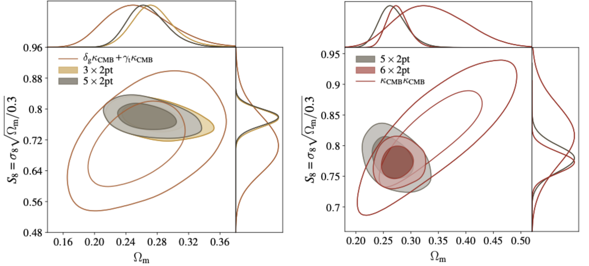

Research
Survey Science
 I am actively involved in two large optical galaxy surveys, the Dark Energy Survey (DES) and the Large Synoptics Survey Telescope (LSST). I work data from DES and simulations from LSST to answer questions I'm interested in (see below). These surveys provide a large, homogeneous and complete sample of the sky for statistical studies of both cosmology and galaxy formation. It has always been a fascinating idea that we can use the whole ensemble of galaxies as test particles to map out the cosmic history -- it's like setting up the largest physics lab experiment.
I am actively involved in two large optical galaxy surveys, the Dark Energy Survey (DES) and the Large Synoptics Survey Telescope (LSST). I work data from DES and simulations from LSST to answer questions I'm interested in (see below). These surveys provide a large, homogeneous and complete sample of the sky for statistical studies of both cosmology and galaxy formation. It has always been a fascinating idea that we can use the whole ensemble of galaxies as test particles to map out the cosmic history -- it's like setting up the largest physics lab experiment.
Weak Gravitational Lensing
 Light bends as it travels through the mass distribution of the Universe, resulting in the observed images of galaxies to be distorted. This provides us with a tool to study the mass distribution of the Universe. I work on a wide variety of topics related to weak gravitational lensing. This ranges from studying how systematic effects in the telescope optics and the atmosphere for LSST affects the cosmological measurements, to conventional weak lensing cosmology analyses (2-point functions) in DES, to slightly non-conventional projects in weak lensing including the construction of wide-field mass maps for DES.
Light bends as it travels through the mass distribution of the Universe, resulting in the observed images of galaxies to be distorted. This provides us with a tool to study the mass distribution of the Universe. I work on a wide variety of topics related to weak gravitational lensing. This ranges from studying how systematic effects in the telescope optics and the atmosphere for LSST affects the cosmological measurements, to conventional weak lensing cosmology analyses (2-point functions) in DES, to slightly non-conventional projects in weak lensing including the construction of wide-field mass maps for DES.
Image: the first year DES weak lensing mass map generated on a curved sky (Chang et al., 2017).
Cross-correlation and Probe Combination
Optical surveys are just one window where we can collect information about the Universe. There are many other windows. Two of the most exciting ones to me is the cosmic microwave background (CMB) and HI intensity mapping. In DES, I am involved in projects combining DES and CMB data from the South Pole Telescope (SPT). HI is a more futuristic probe, but many of the tools and techniques are similar to CMB analyses. Optimally combining all the information is important for both systematics mitigation and breaking degeneracies.
Image: cosmological constraints from the first year DES data and combined with external probes (DES et al., 2017).
Halo-galaxy Connection
Cosmologists like to treat galaxies as point particles, but they really aren't! Understanding galaxies and how they are linked to their dark matter hosts is one of the most important questions for the next generations of cosmological analyses. These small-scale details limit the amount if information we are able to extract from the same data set. I am interested in looking at this within the context of galaxy-galaxy lensing and the splashback feature.
Image: fraction of red and blue galaxies over all galaxies around massive galaxy clusters, the point where galaxy start to turn red coincides very well with the splashbak feature measured using independent methods (Baxter, Chang et al., 2017).
Simulations
Nobody will doubt that the upcoming decade in cosmology will be driven by data -- the more complex analysing and combining large datasets are, the more challenging it is to deconvolve the various instrumental and observational effects from the measurements. Forward-modelling is one of the most natural approaches to the problem. I have been involved in the early development of the LSST Photon Simulator, and building DES mock images from cosmological simulations and a fast image simulator UFig. Other types of simulations I've worked on include spectroscopic simulations and radio spectrometer time-streams.
Image: a cutout of a DES image (right) and its simulated counterpart (left) using the UFig image simulator (Chang et al., 2015).
Hardware
 Although I've not spend a long time in the lab, I am interested in understanding all the components that build up to an experiment, and that include instrumentation. My hardware experience include setting up a lab for the early stages of LSST detector testing at Stanford and helping with the design and development of the hardware system at the Bleien Radio Observatory.
Although I've not spend a long time in the lab, I am interested in understanding all the components that build up to an experiment, and that include instrumentation. My hardware experience include setting up a lab for the early stages of LSST detector testing at Stanford and helping with the design and development of the hardware system at the Bleien Radio Observatory.
Image: the 7m dish (left) and 5m dish (right) at the Bleien Observatory where a group of cosmologists learned about radio astronomy.